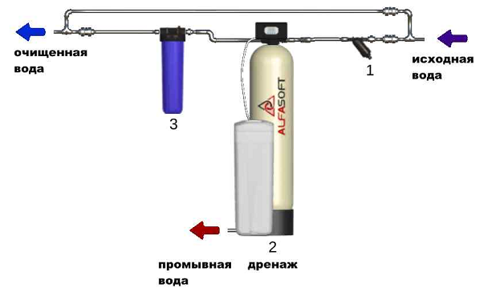

СХЕМА 1. Установка умягчения
ПРИНЦИПИАЛЬНАЯ СХЕМА ОЧИСТКИ

СОСТАВ СТАНЦИИ ВОДОПОДГОТОВКИ
Фильтр механический
Фильтр CEPEX LF 1" (130мкм)
Фильтр CEPEX LF 1" (130мкм) Тонкость очистки (мкм) 130 Дисковые фильтры CEPEX обладают высокой производительностью и повышенной грязеемкостью по сравнению с сетчатыми фильтрами. В качестве фильтрующего элемента используются диски из полимеров, на поверхности которых имеются канавки определенной ширины и глубины. При сжатии дисков между ними появляется объемная сетчатая структура, являющаяся рабочим фильтрующим элементом. Вода проходит через плотно сжатые диски, а нерастворенные частицы остаются в междисковом пространстве. Для того чтобы промыть дисковый фильтр, нужно сбросить давление в магистрали, затем снять кожух фильтра и достать фильтрующий элемент, при этом пакет дисков разожмется. В разжатом состоянии диски легко промываются водой под незначительным напором.Предварительная стоимость оборудования с учетом ваших лабораторных показателей воды.
-
Фильтр умягчения 1035 в сборе Солевой бак на 70 л1 шт.28125 руб.49500 руб.
-
Фильтр CEPEX LF 1" (130мкм) (Испания)1 шт.1400 руб.1400 руб.
-
Соль таблетированная (25кг)1 меш.600 руб.600 руб.
-
Фильтр угольный ВВ СР10”1 шт.3500 руб.3500 руб.